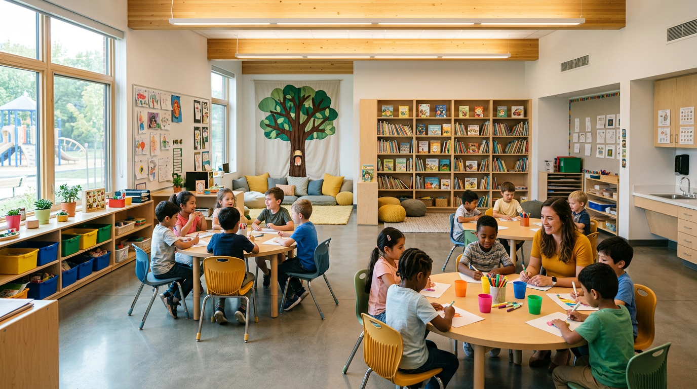
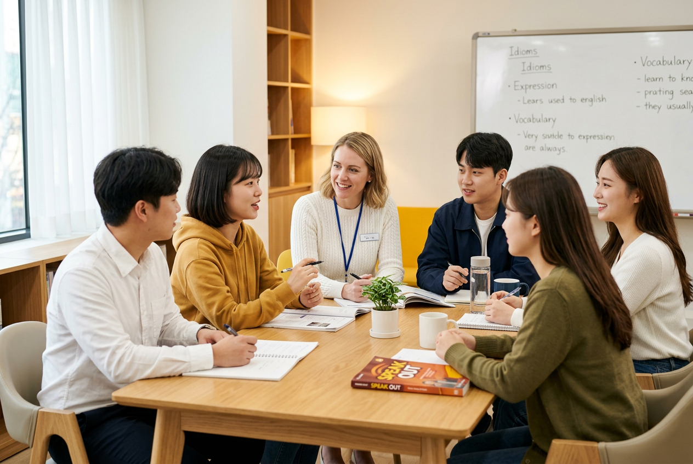
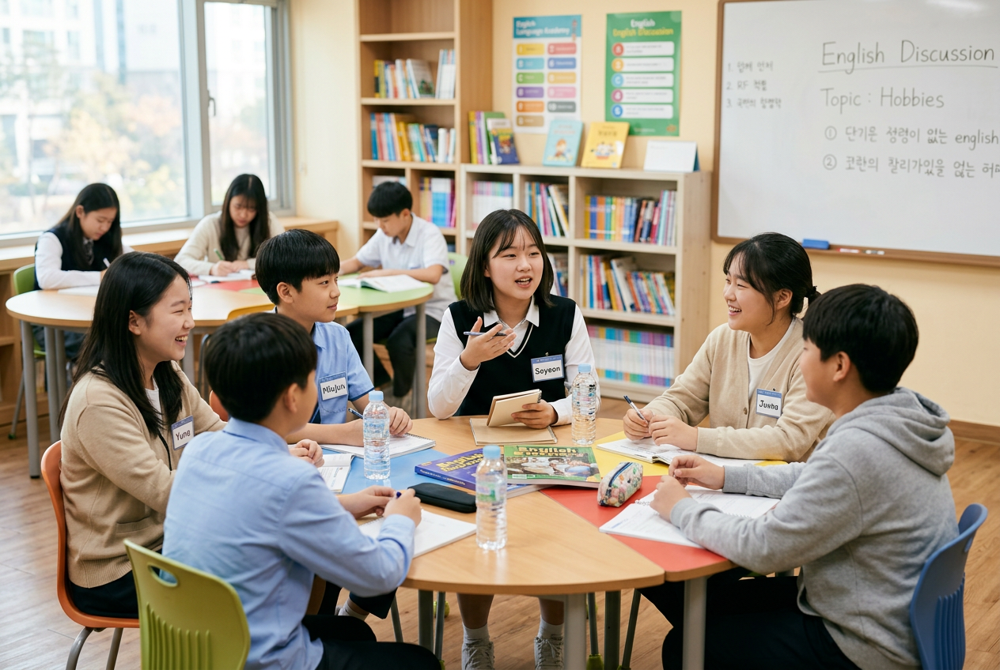
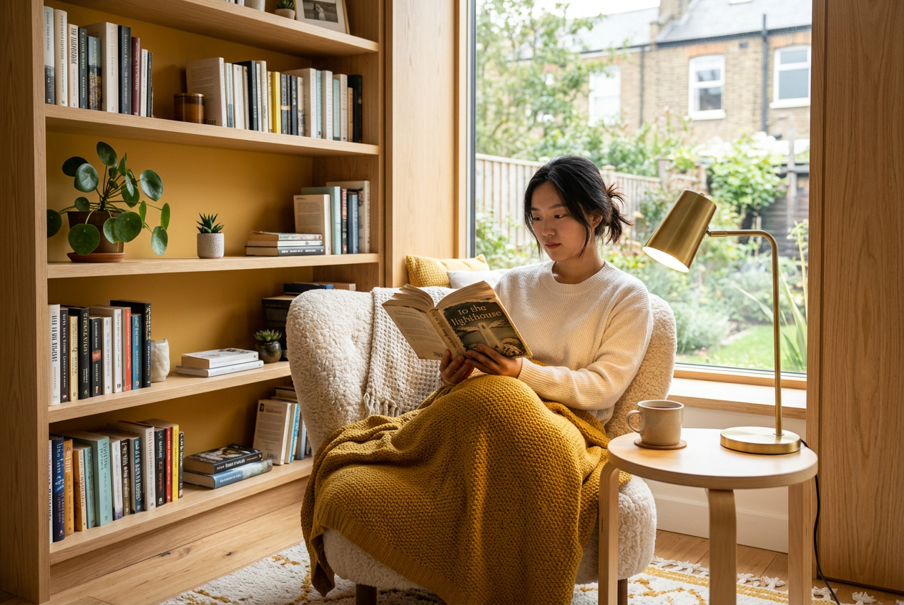
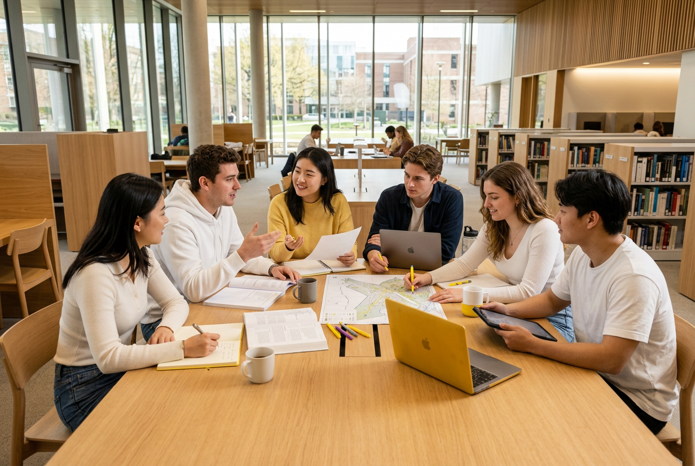
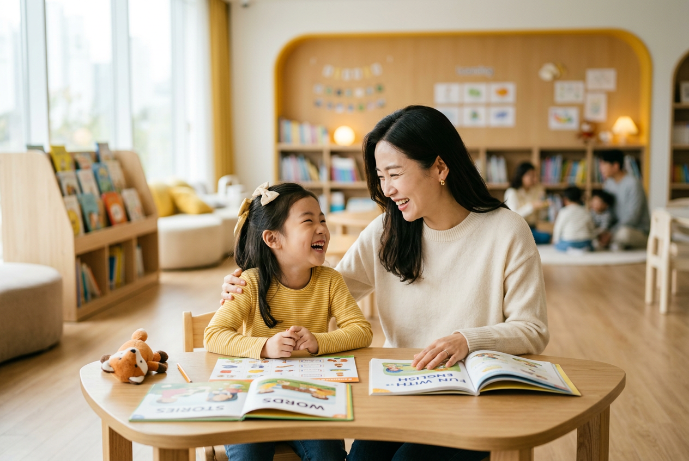
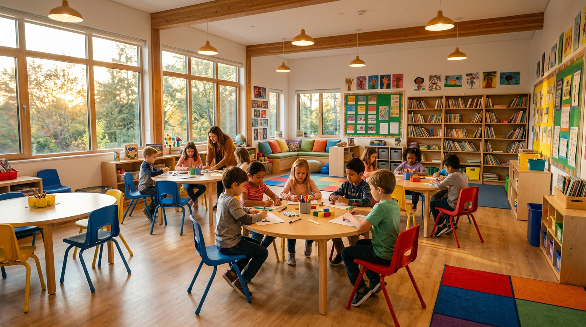

Premium English Studio in Daechi-dong
소수정예 몰입형 수업으로
아이의 영어가 자연스럽게 흘러나옵니다.
Class Size
최대 6인 소수정예
Teaching
원어민 + 이중언어 팀
Since
2018년 대치동 개원
Our Philosophy
플로우잉글리시는 '영어를 공부한다'가 아니라
'영어로 생각한다'를 목표로 합니다.
질문하고, 토론하고, 발표하는 과정에서
아이들은 자연스럽게 영어로 사고하는 힘을 기릅니다.

"Language is not
— Stephen Krashen
taught — it's caught."
Programs
각 연령대의 언어 발달 단계에 맞춘
체계적인 커리큘럼을 운영합니다.
11세 — 13세 · 주 3회 · 90분
7세 — 10세 · 주 2회 · 60분
노래, 스토리텔링, 놀이 중심의 영어 첫걸음.
자연스러운 발화 습관을 만들어 줍니다.

11세 — 13세 · 주 3회 · 90분
토론과 프레젠테이션 중심 몰입 회화.
논리적 사고력과 표현력을 함께 키웁니다.
14세 — 16세 · 주 3회 · 120분
아카데믹 에세이와 크리티컬 리딩 심화 과정.
국제학교·특목고 준비에 최적화되어 있습니다.
Instructors
원어민과 이중언어 교사가 팀을 이루어
아이의 성장을 함께 이끕니다.
Head Instructor · TESOL Certified
Columbia University 교육학 석사. 12년간 아시아권
영어 교육 경험. 아이들의 자발적 발화를 이끌어내는
대화 중심 교수법 전문가.
이중언어 교사 · 8년 경력
연세대 영어영문학과 졸업.
한국어와 영어 사이의 다리 역할로
아이의 이해도를 높여줍니다.
원어민 교사 · Creative Writing
UC Berkeley 영문학 전공.
창작 글쓰기와 스토리텔링으로
아이들의 상상력을 영어로 표현하게 합니다.
아늑한 독서 코너, 원형 토론 테이블, 프레젠테이션 무대까지.
영어가 자연스럽게 일어나는 공간을 만들었습니다.


Our Space
아이들이 좋아하는 공간에서 자연스럽게 영어에 빠져들 수 있도록
교실 환경을 세심하게 설계했습니다.

Parent Reviews
플로우잉글리시를 직접 경험한 학부모님들의 솔직한 후기입니다.
"다른 학원에서는 입도 못 떼던 아이가 여기 오고 3개월 만에
영어로 자기 의견을 말하기 시작했어요. 선생님들이 강요하지 않고
자연스럽게 이끌어주시는 게 정말 달랐습니다."
박지영
Kids English 학부모 · 수강 1년
"수업이 끝나고 집에 오면 영어로 혼잣말하는 모습을 봐요.
'영어가 재미있다'는 말을 학원에서 처음 들었습니다.
매달 오는 리포트도 아이의 성장이 눈에 보여서 좋아요."
이수현
Junior Speaking 학부모 · 수강 2년
"대치동에 영어학원이 많지만 이렇게 소수정예로
한 아이 한 아이 케어해주는 곳은 처음이에요.
Academic Writing 반 덕분에 국제학교 입시 에세이도
자신감 있게 준비할 수 있었습니다."
최민서
Academic Writing 학부모 · 수강 1년 6개월
FAQ
모든 반은 최대 6명으로 운영됩니다. 선생님이 각 학생의 발화량을 충분히 확보하고 개별 피드백을 줄 수 있도록 소수정예를 철저히 지키고 있습니다.
무료 상담 시 원어민 교사와 15분간 1:1 대화 형식으로 레벨 테스트를 진행합니다. 읽기·듣기·말하기를 종합적으로 평가하여 가장 적합한 반을 안내드립니다.
매월 학부모 피드백 리포트를 제공합니다. 아이의 발화 빈도, 어휘 성장, 참여도, 그리고 담당 교사의 소견이 포함됩니다. 분기별 학부모 면담도 진행합니다.
네, 무료 체험 수업(1회)을 제공합니다. 레벨 테스트 후 해당 반의 정규 수업에 참여하여 실제 수업 분위기를 경험해보실 수 있습니다.
Kids English는 월·수 4:00–5:00, Junior Speaking은 월·수·금 4:30–6:00, Academic Writing은 화·목·토 3:00–5:00에 진행됩니다. 반별 정원이 차면 대기 접수를 받고 있습니다.
분기마다 레벨 재평가를 진행하며, 실력 향상이 확인되면 상위 반으로 이동합니다. 반 변경 시에는 학부모님과 상담 후 결정됩니다.
Consultation
무료 상담에서는 아이의 현재 영어 수준을 진단하고,
맞춤 학습 플랜을 제안드립니다.
부담 없이 편하게 방문해 주세요.
상담 전화
02-555-0147
상담 시간
월–금 10:00 – 19:00 · 토 10:00 – 14:00
오시는 길
서울특별시 강남구 대치동 943-16, 삼성빌딩 3층
Kids English
7세–10세
월 · 수
16:00–17:00
Junior Speaking
11세–13세
월 · 수 · 금
16:30–18:00
Academic Writing
14세–16세
화 · 목 · 토
15:00–17:00

Flow English Studio
지금 무료 상담을 신청하시면
레벨 테스트와 체험 수업을 함께 안내드립니다.